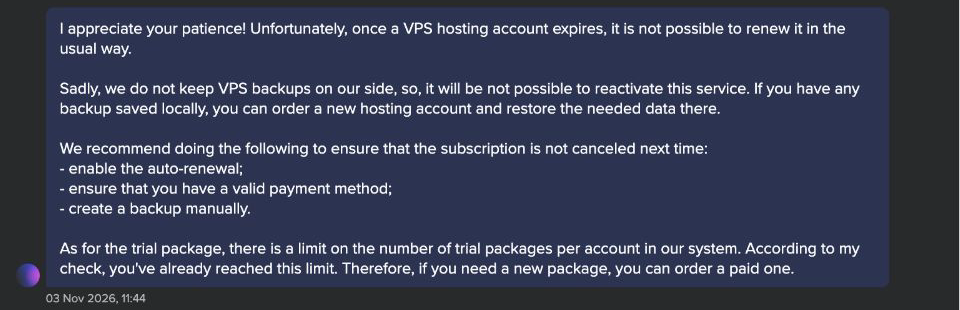
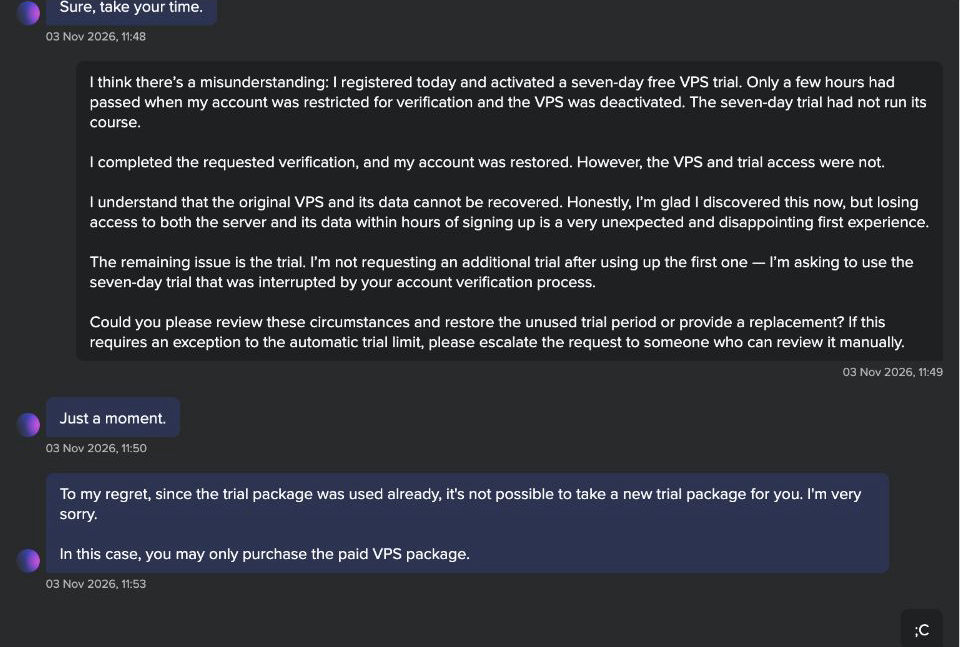
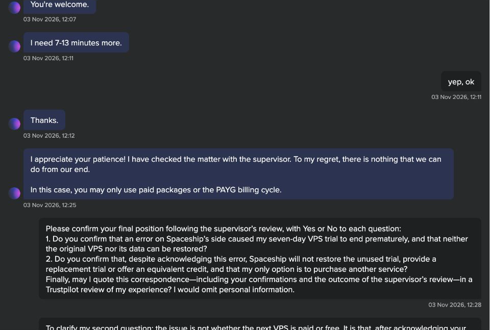
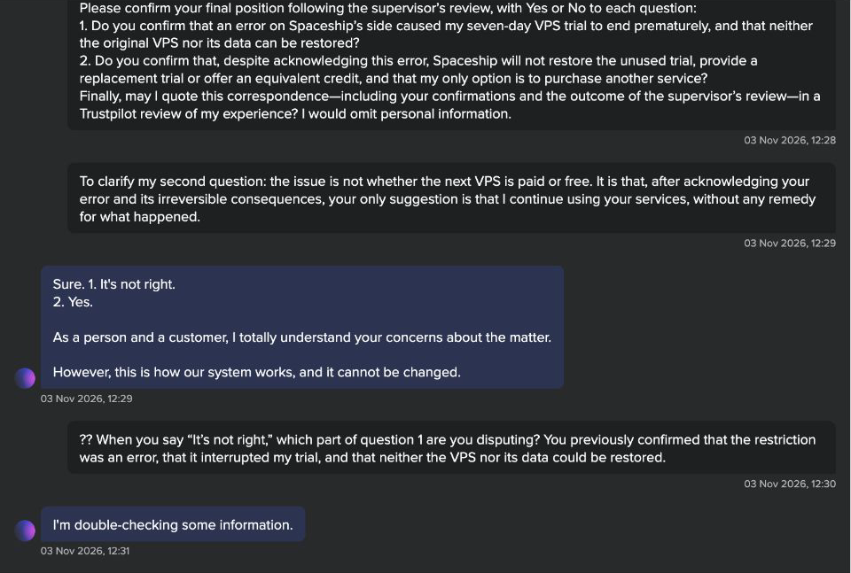
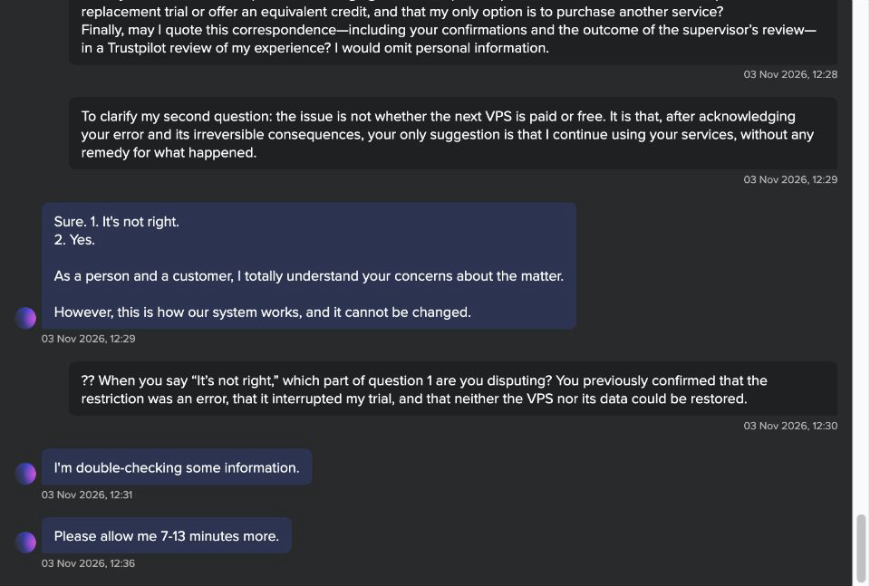
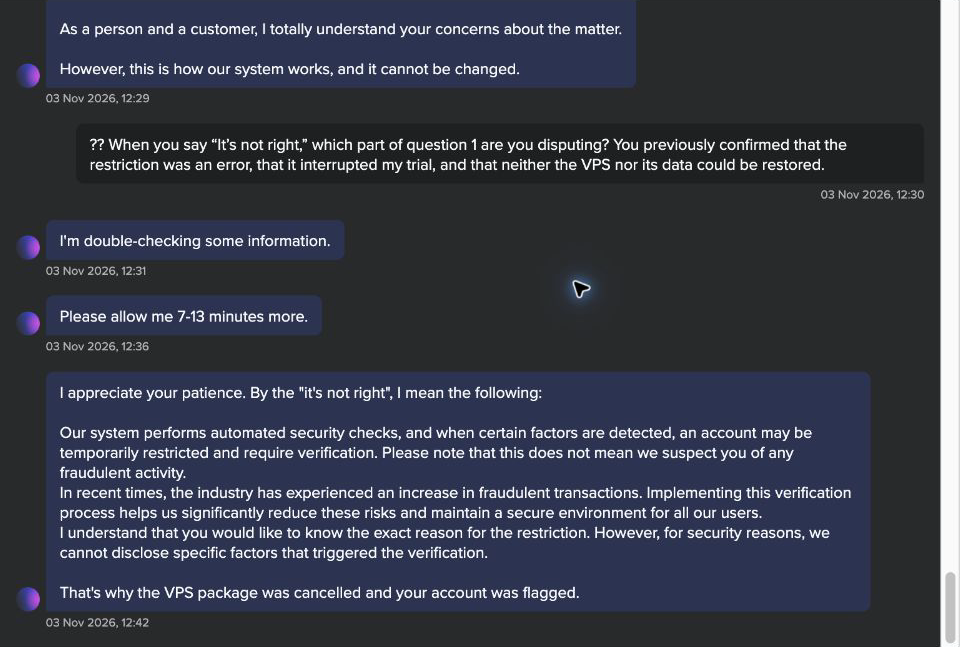
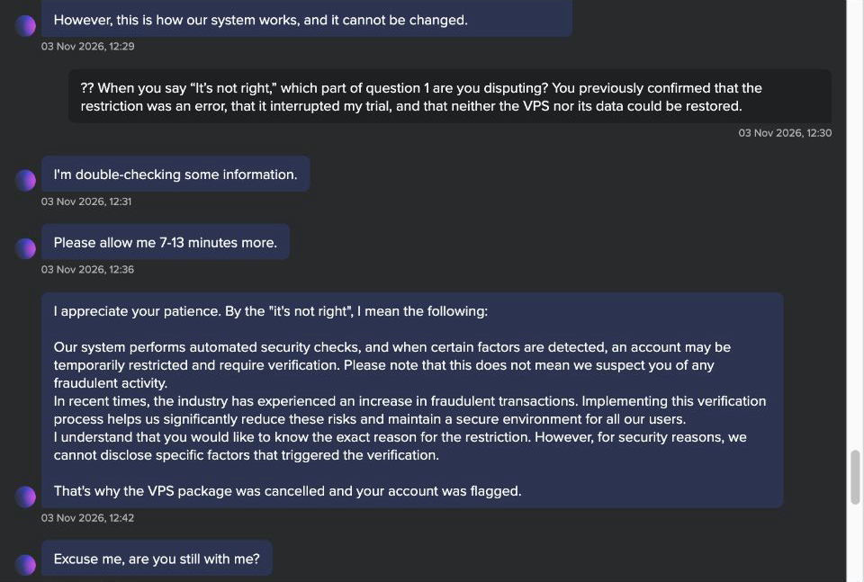
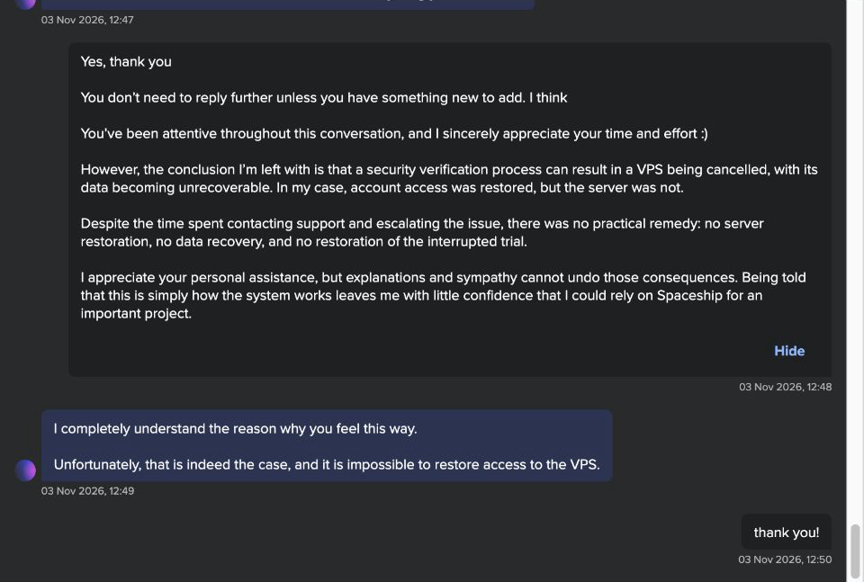

What happens when an account check leaves a VPS unrecoverable?
A small trial became a much larger question about reliability, recovery, and how a provider handles its own account restrictions.
Account verification left my trial VPS unrecoverable
After an account verification check, I could no longer access my trial VPS, and Spaceship support said it could not restore the server or recover its data. This experience made me question whether I could trust the service with an important project.
I registered on 3 November 2026 and activated a seven-day VPS trial. A few hours later, within a minute of ordering an additional paid VPS, my account was restricted. I completed the requested verification and regained account access, but the original VPS and trial access were not restored.
I asked support eight specific questions. At 12:05, the agent initially answered yes to the restriction being their error, the trial lasting seven days, its premature deactivation during the restriction, and the inability to restore either the VPS or its data. The agent declined to restore the interrupted trial or provide replacement trial access.
After checking with a supervisor, the agent said at 12:25 that nothing could be done and suggested paid service or PAYG. At 12:29, the explanation was: “However, this is how our system works, and it cannot be changed.”
Support later qualified the initial answer about an error. At 12:42, the agent described automated security checks, said this did not mean I was suspected of fraud, and declined to disclose the factors that triggered verification. He explicitly linked the VPS cancellation to that process. At 12:49, after I summarized the consequences, the agent again confirmed that restoring access to the VPS was impossible. The conversation ended at 12:50 without a restoration, recovered data or replacement trial.
Some results had already been saved independently, but that did not make the original VPS recoverable. My concern is why a temporary verification restriction resulted in cancellation of a VPS that support could not restore, rather than a reversible suspension. A small trial exposed a much larger trust problem for me.
Experience date: 3 November 2026. All chat times are Bangkok time (UTC+7). Updated through the final exchange at 12:50. This records one trial VPS incident; it does not assert that every paid VPS is handled in the same way.
Copy-ready text
The conversation, in context
These are crops of actual browser screenshots, not reconstructed chat bubbles. Only crop boundaries were changed; the visible pixels match the corresponding regions of the retained originals. Account identifiers and the chat header are excluded. Dates and numbered questions remain visible.
The server could not be restored
Support says it cannot reactivate this VPS and has no backup available to recover it.

Open full-resolution screenshot ↗A seven-day trial interrupted after hours
The customer explains the interruption. The response treats the trial as already used and declines replacement.

Open full-resolution screenshot ↗The exact questions and initial answers
All eight questions and numbered answers are shown together. The first five answers are affirmative; replacement trial access is declined.
 Open full-resolution screenshot ↗
Open full-resolution screenshot ↗A supervisor review produces no remedy
The agent reports checking with a supervisor and says nothing can be done, suggesting paid service or PAYG.

Open full-resolution screenshot ↗The later ambiguity is included
A combined summary receives an ambiguous response. The customer asks which fact is disputed; the agent says he is checking.

Open full-resolution screenshot ↗An additional check is requested
The agent requests another 7–13 minutes. The later explanation is included immediately below.

Open full-resolution screenshot ↗The later security explanation is included
The agent describes automated verification, does not identify the trigger, says this does not imply suspected fraud, and links the VPS cancellation to that process. This qualifies the earlier answer about an error.

Open full-resolution screenshot ↗The explanation in its closing context
The security explanation follows the clarification request; the agent then asks whether the customer is still present.

Open full-resolution screenshot ↗The final answer: access cannot be restored
The customer summarizes the consequences and thanks the agent. At 12:49 the agent again confirms that restoring VPS access is impossible; the customer closes the exchange.

Open full-resolution screenshot ↗